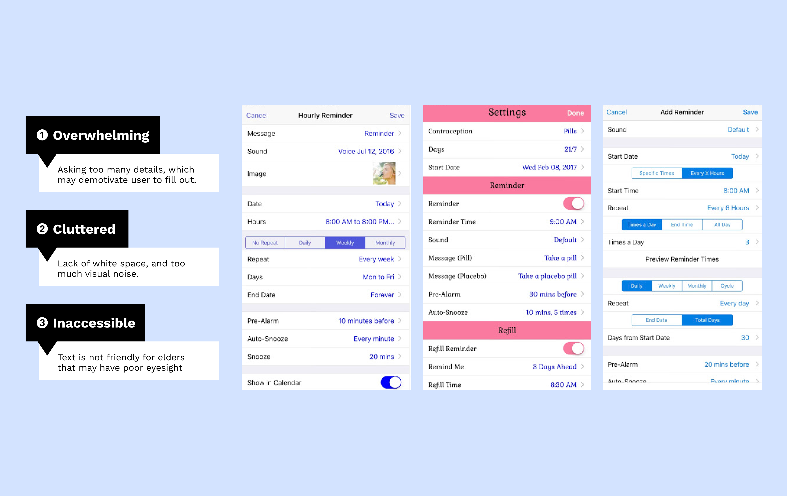
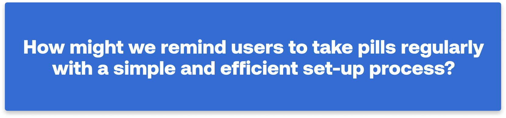
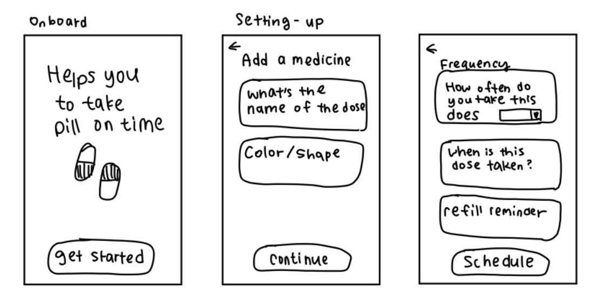
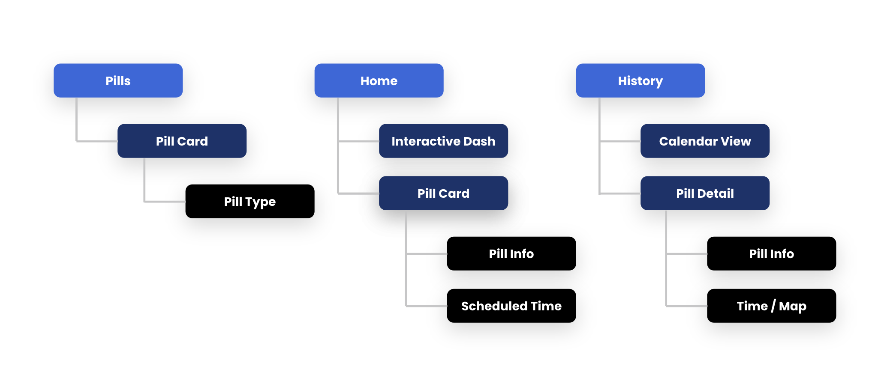
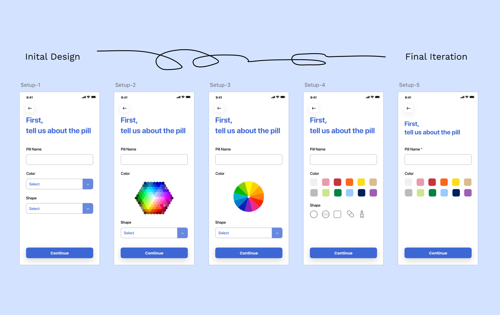
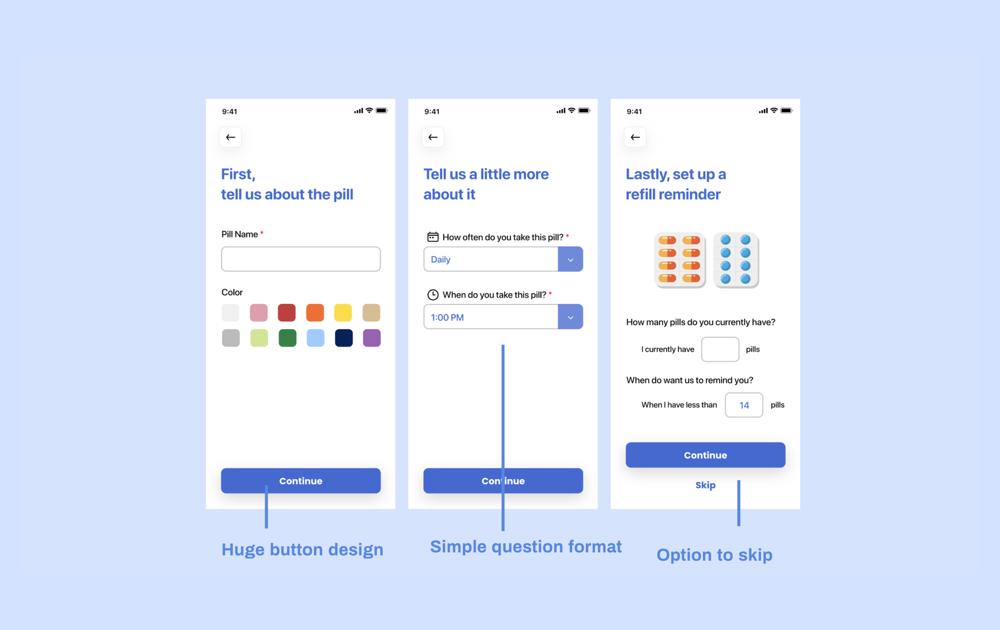
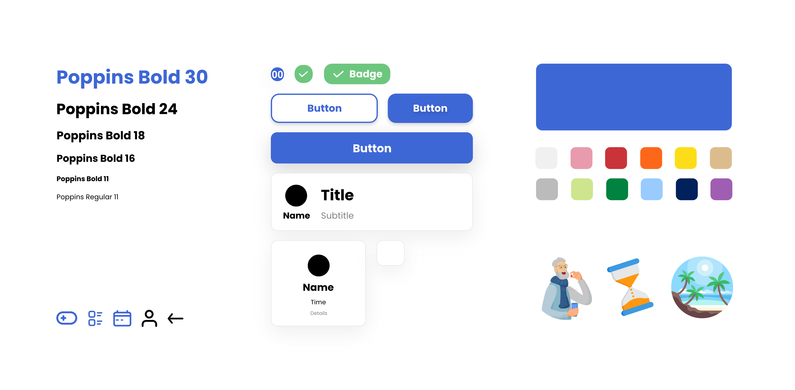
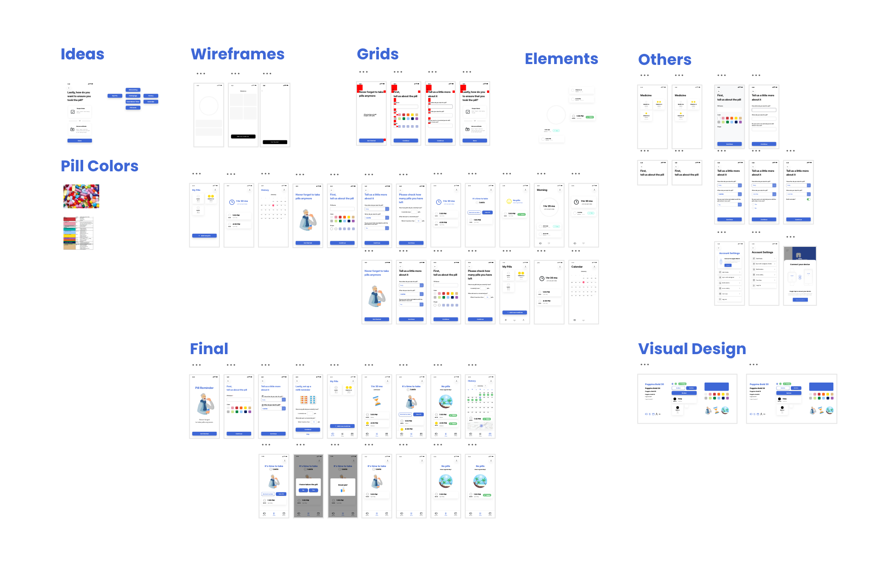

Pill Reminder Made Simple.
The current pill reminders apps are difficult to setup reminders. I redesigned the setup workflow and crafted interactive experience that sparks joy.
Overview
I designed a platform that help students find and share class resources easily and effectively.
Project — 1 Week, Personal Project
Scope — Product thinking, Interaction Design, Visual Design, Brand design
Tool — Adobe XD
Introduction
To Start Off... During the beginning of winter quarter, I got sick and it wasn’t fun. I had to take pills every day to cure the sickness. However, I kept forgetting to take the pills and it got worse. I decided to download some apps to remind myself.

Problem
I quickly realized that with the existing pill reminder app, it is extremely difficult to set up a pill reminder. Here are some of the current pill reminder applications.

Research
I am not the main user for a pill reminder app, elders are. To really understand how user’s remind themselves to take pills on a daily basis, I interviewed 3 Parkinson’s disease patients. Medication is a significant part of Parkinson patients' recovery process. Specifically, I want to learn about their daily lives and their pain points.
Talking to a 3 patients, here are the key insights I found:
1. Frustrating to set up a reminder - Patients have tried various applications, and find most set-up processes difficult to customize and time consuming.
2. Patient’s cognitive state and experience with digital devices varies - Not all patients are able to remind themselves.
3. Confused on whether they took the pill or not - Patients get confused on whether they took the pill today or yesterday.
Who am I designing for?
Learning that patients may be in different stages and have different cognitive states, I want to have a better understanding of the constraints I may face when designing for elders, which includes: vision, motor control, experience with tech, and cognition.
Opportunities
What if we could create a platform for students to access and share class information?

Setup Pill Reminder
How might we design the Pill Reminder Set-Up Process?
Initial Sketch
Since most of the setup process contains abundance input boxes that are not necessary, I made sure that I only include the essential information to set-up the pill reminder sketch.
 Key Iterations
During the wireframing stage, I started to think about how users should input their responses. There are various pill colors and shapes.
Setup-1: Initial wireframe
Setup-2, 3: Color wireframe
The users have the flexibility to choose abundant colors.
Feedback: After talking to Julie about it. She reflected that there are too many options and the grid is tiny for her to press.
Setup-4: Common Colors
Since the user prefers a simpler version, I iterated on the design to display a few colors, with more space and a larger button. In order to utilize the few color slots, I researched to find common pill colors and applied them to my design.
Setup-5: Final Design
During the research, I realized that there are way more shapes than I have initially imagined. To simplify the experience, I left out the shapes options. Additionally, I added red star sign (*) to signify that the input field is required.
Final Design
Icons and images were added to help users better understand the information.
Bonus
Visual Design
Iterations
Final Design
Simple Set-up Process
Setting up a pill reminder has never been so easy and straightforward. The step-by-step process allows users to not get overwhelmed.
Interactive Dashboard
Inform users when to take a specific pill to stay on track. This page also lists all upcoming pills that the user needs to take later in the day.
History
Help users keep track of when they take the pill. Green check marks inform the user that they have already taken the pill on that specific day.
My Pills
Give users the flexibility to add multiple medications and help them keep track of different pills.
Microinteraction
Microinteractions are added to prevent users from making mistakes and also to provide feedback.
Avioding Slips
Pop-up confirmation screen avoid users from accidentally pressing “Take Pill”
Providing Feedback
Reward users with positive feedback: recognition of job done, also avoid confusion
Reflection & Next Steps
Reflection
1. The design process is never linear
There are a lot of back and forth during the design process.
2. Complexion reduction works better than the other alignments.
In this project, I learned that sometimes “less is more”. A lot of time, we spent a lot of effort on adding additional elements. In this case, it was the opposite.It is important to emphasize and understand the primary users.
Next Steps
When I am designing, I like to think outside of the box (mobile interface).
As for next step, I would like to explore designs on watch to help remind users.
Additionally, include features that would assist severe user that cannot take care of themselves, so they can sync their pill reminder with their caregivers (right screen).